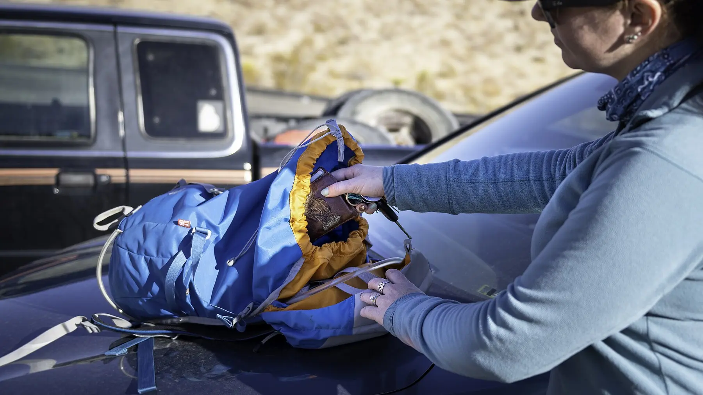
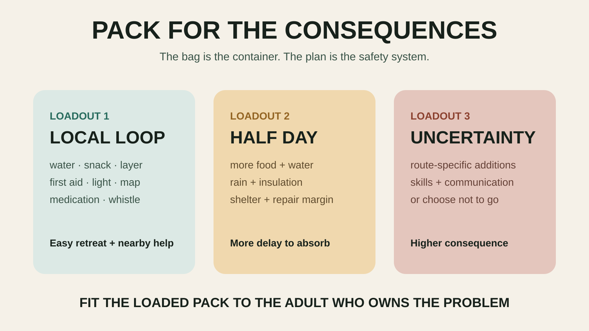

GEAR THAT EARNS ITS SPACE
The Family Hiking Daypack Guide: Carry Enough Without Carrying Everything
Match the load to the consequences. Then make the bag fit the adult carrying it.

Start with the hike, not the backpack
A paved one-mile loop beside a busy park is not an Adirondack summit. A daypack that works for one should not automatically be trusted for the other. Before comparing bags, write down five facts: route length, expected time, forecast, distance from quick help and the youngest hiker’s needs. Then pack for the consequences of delay, not for an imaginary expedition.
The National Park Service describes the Ten Essentials as a minimum framework covering navigation, sun protection, insulation, illumination, first aid, fire, repair tools, food, hydration and emergency shelter. The exact form of each item depends on the route and rules. A family is not safer because every category was technically stuffed into a bag; the adults need to know how and when to use what they carry.
The three-loadout system

Loadout 1: the local loop
Use this for a short, familiar route with reliable cell service, easy retreat and facilities nearby. Carry water, quick food, weather layer, sun and insect protection, necessary medication, compact first aid, a charged phone with the route saved, a whistle and a small light. Add kid-specific items such as an inhaler, sensory aid or dry socks. The car can hold the bulky backup clothing and full picnic.
This loadout still requires a check of hours, closures and weather. “Close to the parking lot” is not a defense against heat illness, a sudden storm or a child who falls. It simply changes how much self-rescue time the group must cover.
Loadout 2: the half-day trail
Add more water and food, an extra insulating layer, rain protection, a dedicated headlamp, navigation that does not depend on one phone battery, repair items and an emergency shelter appropriate to the conditions. Split bulk among capable adults, but keep critical medication, navigation and first aid with the responsible adult—not in the pack of a child who may wander or quit carrying it.
The NPS says a phone does not replace a flashlight or headlamp. New York’s Department of Environmental Conservation also recommends a map and compass or GPS, high-energy snacks, extra clothing, first aid, a whistle and illumination for winter hiking. Those are not endorsements of a specific product. They are reminders that darkness and delay do not care what time the itinerary said you would return.
Loadout 3: the uncertainty layer
This is not a bigger backpack. It is what you add when the forecast, remoteness, cold, route finding, medical needs or turnaround options raise the consequences. The answer may include more insulation, traction, water treatment, emergency communication or a different shelter—but it may also be do not take this route today. For winter, backcountry, severe-weather or technical terrain, use route-specific official guidance and qualified instruction. This page is not a substitute for that planning.
How big should the family hiking pack be?
Do not start with liters. Lay out the actual Loadout 1 or Loadout 2 kit, including the bulkiest layer and the real water containers. Put it into the backpack you already own. If it fits without crushing first-aid supplies, leaking food or hanging gear from every strap, the search may be over.
If it does not fit, measure the load and try candidate packs with weight inside. Capacity labels are not perfectly comparable because shape, pockets and frame design change usable space. A pack that swallows gear but pulls backward is worse than a smaller one that forces better decisions. Leave enough room to retrieve rain gear and food without unpacking onto the trail.
The fit check that matters
- Load it first. An empty backpack can make almost any shoulder strap feel acceptable.
- Set the torso and hip belt if adjustable. Follow the manufacturer’s fitting instructions; do not guess from the wearer’s height alone.
- Walk stairs and bend down. The pack should not hit the back of the head, swing badly or block an adult from helping a child.
- Reach the essentials. Water, snack, map, light and first-aid kit need deliberate locations that another adult can find.
- Test the car fit. The daypack should remain accessible after the cooler, stroller and wet-gear bin are loaded.
A child may carry a small personal pack if it fits and the contents are noncritical: their water, layer and snack. The adult still owns the safety system. Do not solve an overweight family pack by making the smallest hiker carry emergency gear.
Organization without pocket madness
Use four internal zones: water and food, weather, care, and navigation/light. Small labeled pouches or contrasting bags work better than memorizing which of fourteen black zipper pockets contains the inhaler. Keep wet or dirty items isolated. Put keys in one clipped location and leave them there.
At home, store repeat-use items together but remove food, wet clothing, medication that should not live in temperature extremes and batteries that require inspection. A permanently “ready” bag filled with expired supplies is theater.
Hydration choices and their tradeoffs
Bottles are easy to inspect, portion and clean. A reservoir can make drinking easier while walking but hides the remaining volume and adds a hose and bladder to dry. Either works when the family actually uses and cleans it. Separate kid bottles make responsibility visible; the adult should still track consumption and carry reserve water when the route demands it.
Water need changes with heat, exertion, duration, body size and access to a safe refill. Do not turn one generic volume rule into a medical guarantee. Start with the current route guidance, forecast and the group’s needs, then build in margin. Untreated natural water is not a free refill.
What not to buy
- A giant tactical-style bag for a two-hour family walk. Extra capacity invites dead weight.
- A pack whose torso length or hip belt does not fit the adult who will actually carry it.
- A fragile fashion pack when wet ground, sap and snack leaks are normal.
- A reservoir-only design if nobody will clean and dry the bladder after every use.
- A built-in “first-aid kit” without inspecting every item, expiration date and instruction.
- A technical pack as a substitute for navigation practice, weather judgment or a turnaround rule.
The ten-minute post-hike reset
- Empty trash, wet clothing and food immediately.
- Open every compartment and dry the pack according to its care instructions.
- Restock only what was used; check medications and first-aid dates.
- Recharge the light and backup power, then verify they turn on.
- Put the map, keys and wallet back in their normal lives.
- Write one sentence about what was missing or never touched.
The sentence is how the system improves. If the same item rides unused for five easy trips, ask whether it protects against a meaningful consequence or is just emotional ballast. If every trip ends with the adult rationing water, fix that before buying another organizer.
A buying framework that keeps the commission out of the decision
Use case: local loop, half-day trail or more consequential terrain? Carrier: which adult owns it, and does it fit loaded? Access: can another adult find water, medication and first aid? Weather: are rain protection and wet storage realistic? Care: can the bag, bottles and reservoir be cleaned and dried? Compatibility: do your actual containers, layers and child-specific supplies fit?
Only after those answers should price, color and features enter the conversation. The Amazon links added below use Mr Adventure Dad’s approved affiliate account and compare broad product categories, not “winners.” We have not claimed hands-on testing, current stock, ratings or a universal best pack. Check manufacturer fit charts, materials, dimensions, care instructions and return policy before buying.
Who should skip buying
Skip a new pack if an existing school backpack comfortably holds the local-loop kit, stays closed and can be cleaned. Skip the half-day hike if the required load does not fit the carrier safely. Skip generic gear advice entirely when the route involves technical terrain, water crossings, winter exposure, wildfire smoke, severe heat or unreliable rescue access; use current land-manager guidance and qualified local expertise.
Put it to work on a forgiving day
Test the system at Green Lakes State Park, where a short lake plan keeps the car and facilities relatively close, or use the Chimney Bluffs turnaround plan to see whether the load stays comfortable on uneven natural terrain. Pair it with the family day-trip system so gear supports the itinerary instead of becoming the itinerary.
Safety sources
Safety guidance was checked August 23, 2026. Route, season and weather can demand more than a general list.
- National Park Service: Hike Smart and the Ten Essentials framework
- National Park Service: current Ten Essentials summary and hydration planning
- New York State DEC: winter hiking safety and packing guidance
Keep the weekend moving
Try the system on the Green Lakes family day, protect the bigger outing with the Chimney Bluffs turnaround rule, and keep cold food separate with the family cooler guide.
THE USEFUL STUFF
Gear that removes friction.
These are practical categories to compare—not a reason to overpack. Check fit, specifications and current reviews before buying.
Paid links: As an Amazon Associate I earn from qualifying purchases. You pay no additional cost.
Family hiking daypack
Prioritize fit, reachable water and room for layers rather than maximum capacity.
See current options → COMPARE ON AMAZONRechargeable headlamps
Hands-free backup light belongs in the pack even on a daytime start.
See current options → COMPARE ON AMAZONTrail first-aid kit
Choose a compact kit and learn what is inside before you need it.
See current options →